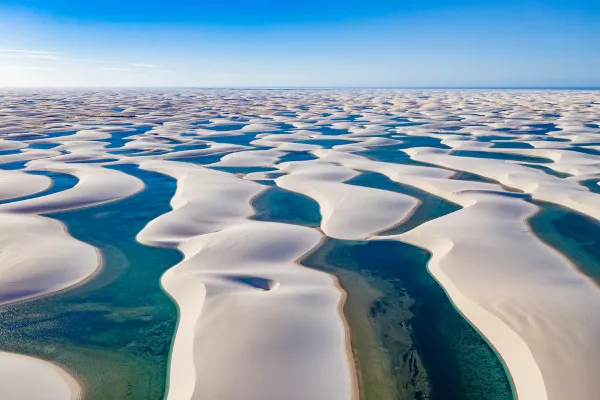

O Maranhão é um estado localizado na região Nordeste do Brasil, conhecido por suas praias paradisíacas, como as de Lençóis Maranhenses, que possuem dunas de areia branca e lagoas de água cristalina. Sua capital é São Luís, uma cidade com um centro histórico cheio de charme, influenciado pela arquitetura colonial portuguesa. O Maranhão também é famoso por sua cultura vibrante, com festas tradicionais, música e dança, como o bumba meu boi. Além disso, o estado possui uma rica biodiversidade e uma história marcada por influências indígenas, africanas e europeias. É um lugar cheio de belezas naturais e culturais que encantam quem o visita!
